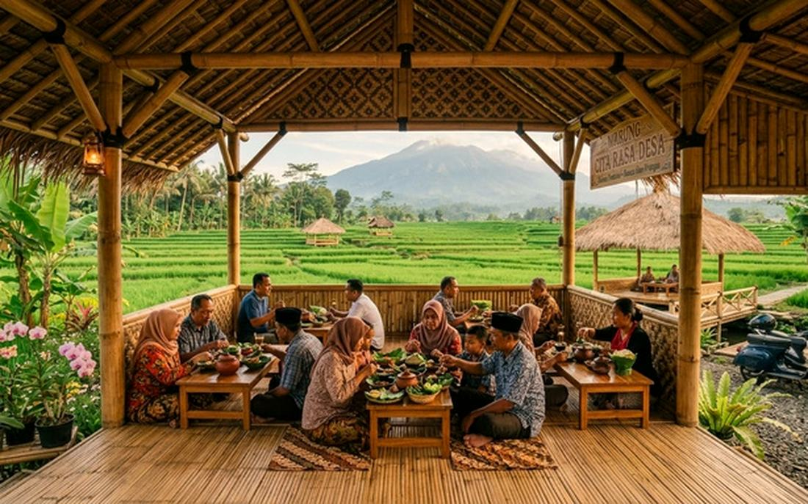
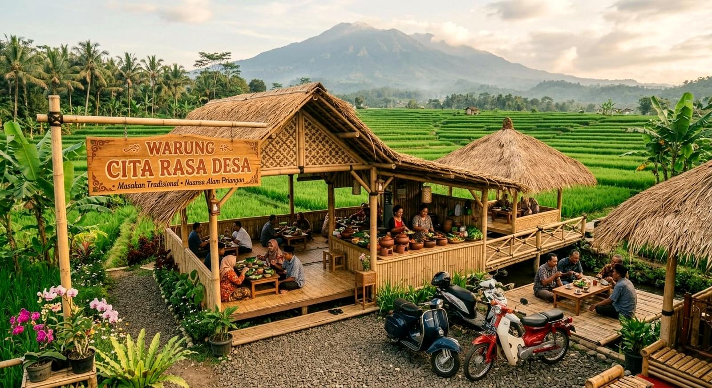
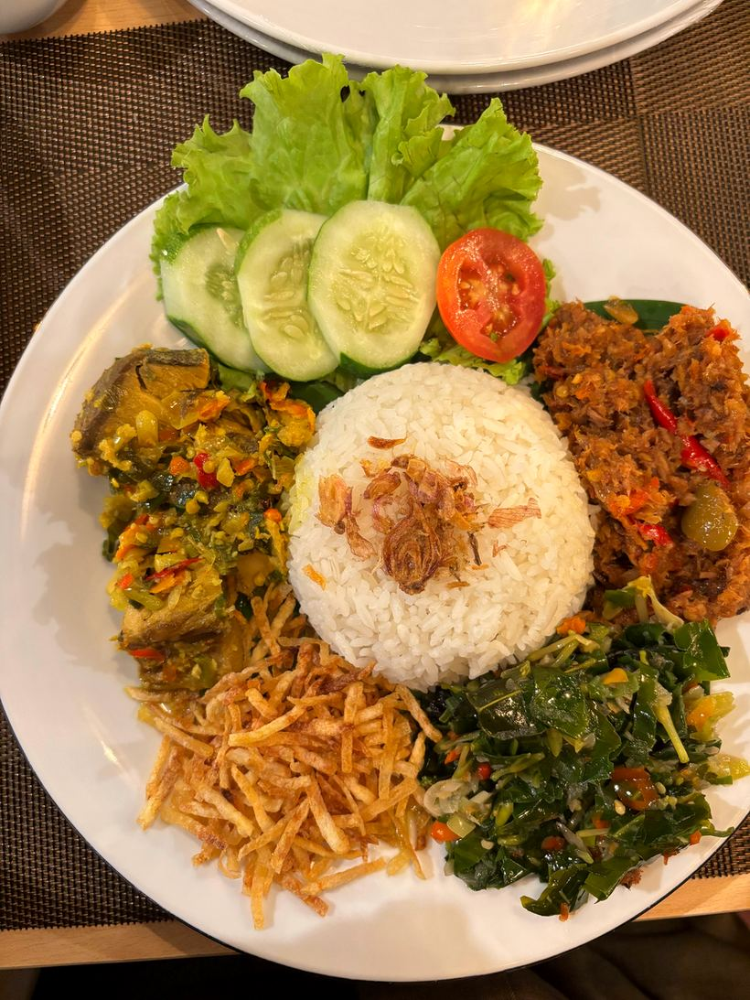
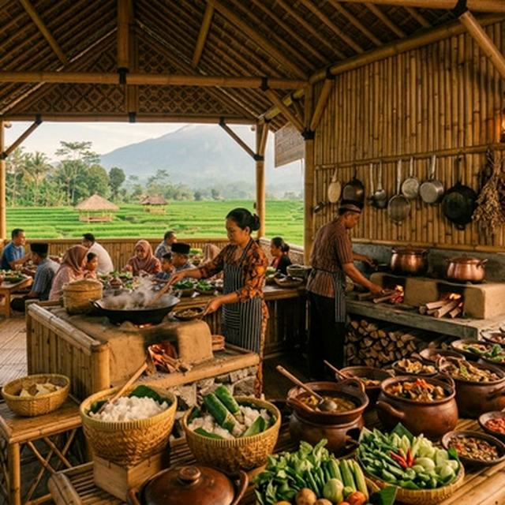
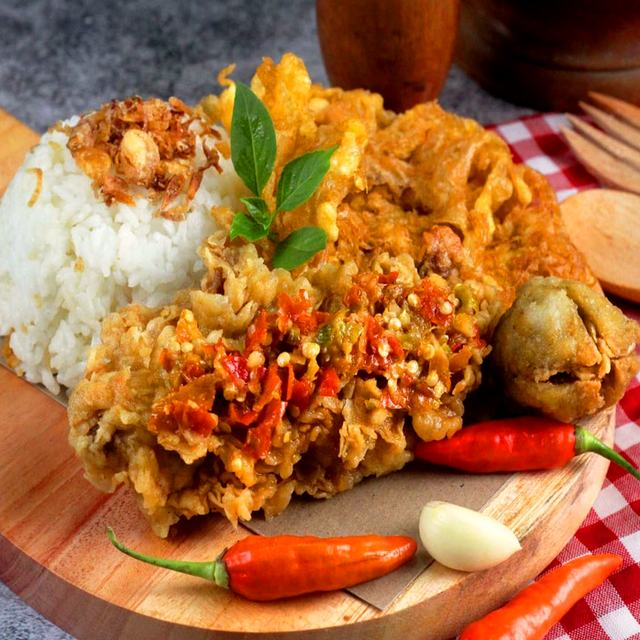
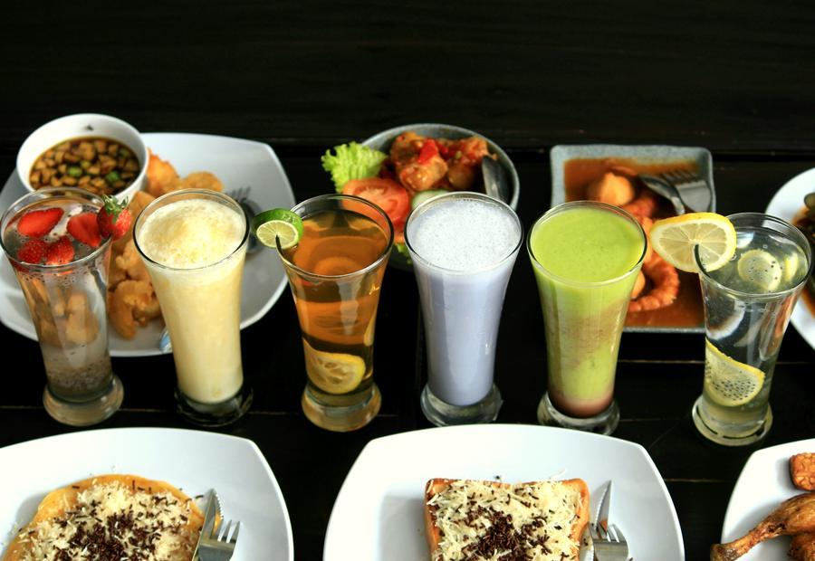
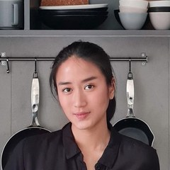
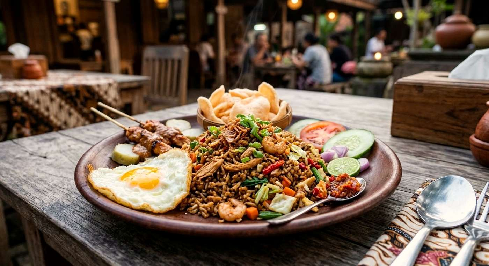

01
Tempat makan yang nyaman dan estetik dengan konsep gubuk pedesaan alami.

PT CITA RASA DESA NUSANTARA
Usaha kuliner nasi campur
"Menyajikan Kehangatan Kampung Halaman ,di Setiap Hidangan"

Rumah makan PT Cita Rasa Desa mengutamakan standar pelayanan yang berfokus pada kepuasan pelanggan, meliputi kebersihan tempat, rasa ,waktu penyajian (15–20 menit), serta penyediaan fasilitas umum yang memadai (toilet bersih, dan tempat cuci tangan).

Tempat makan yang nyaman dan estetik dengan konsep gubuk pedesaan alami.

Bahan baku dijamin segar langsung dari petani, nelayan, dan peternak lokal.

Pengalaman kuliner yang higienis, dan ramah di kantong dengan jaminan kualitas rasa

Empat figur publik yang dikenal melalui dunia kuliner datang dan memberikan ulasan serta membangun pengalaman bersama.
Cita rasa yang kuat, bumbu yang terasa, dan kualitas masakan yang perlu dipertahankan. Masakan tradisional seperti ini punya karakter tersendiri.

Perpaduan bumbu tradisional dan bahan lokal memberikan karakter rasa yang menarik. Sederhana, tetapi punya keistimewaan.
Masakan rumahan dengan cita rasa yang akrab. Rasanya mengingatkan kita bahwa makanan enak tidak harus selalu mewah.
Makanannya punya rasa yang bikin ingin kembali. Bukan cuma soal kenyang, tetapi juga pengalaman menikmati masakan khas desa.
Cita Rasa Desa bukan sekadar tempat makan, melainkan perpaduan cita rasa tradisional, kualitas hidangan, dan kehangatan suasana pedesaan.
Orang-orang di balik PT Cita Rasa Desa Nusantara yang menjalankan perusahaan, mulai dari kepemimpinan, keuangan, hingga administrasi.
